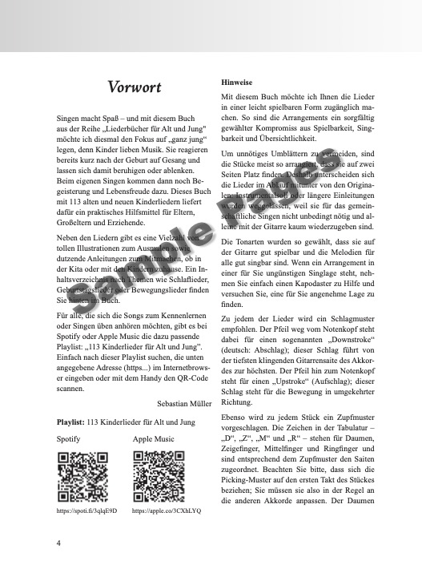
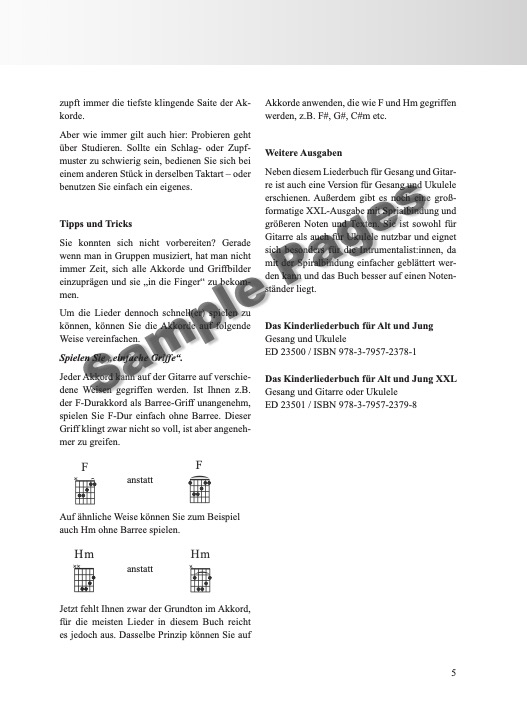
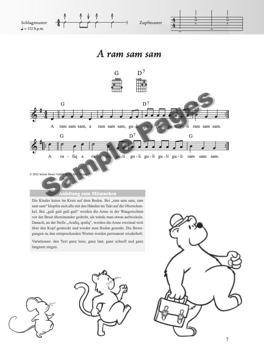
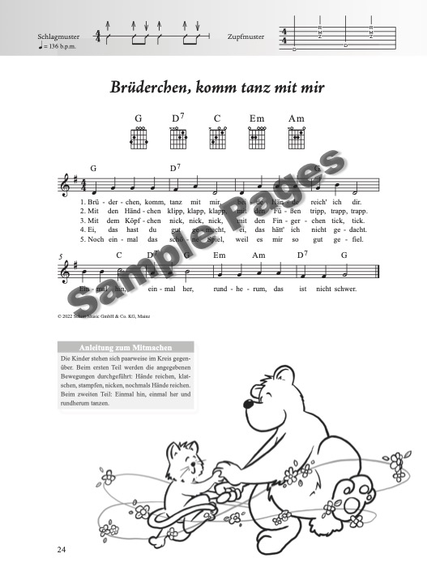
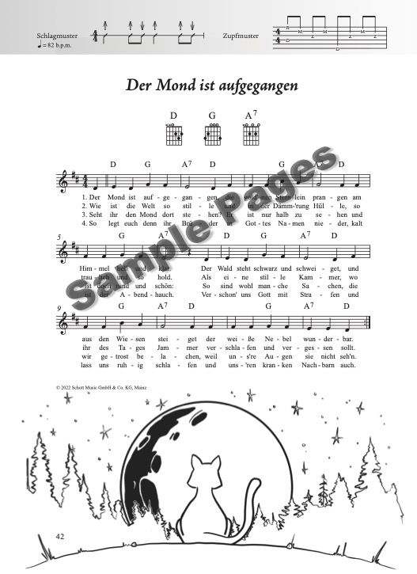
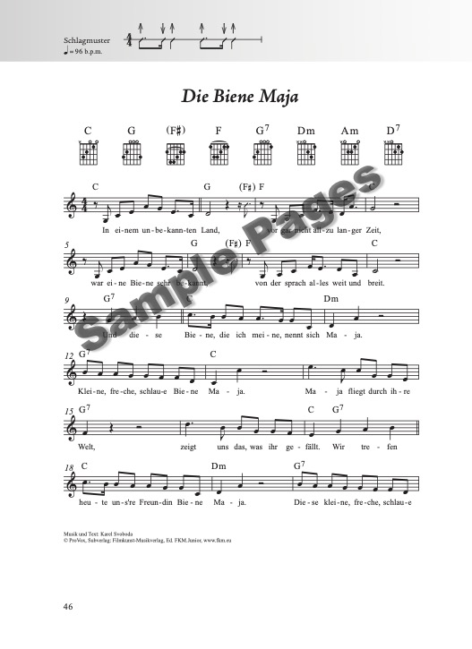
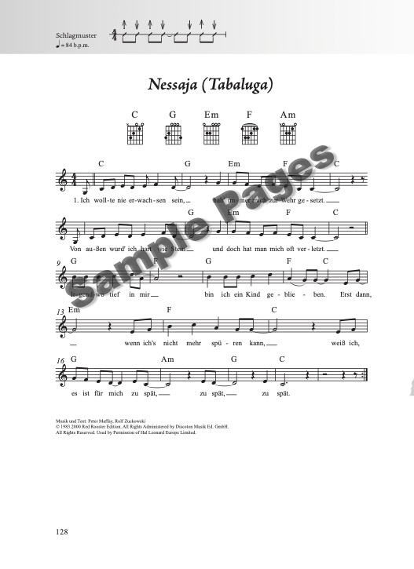
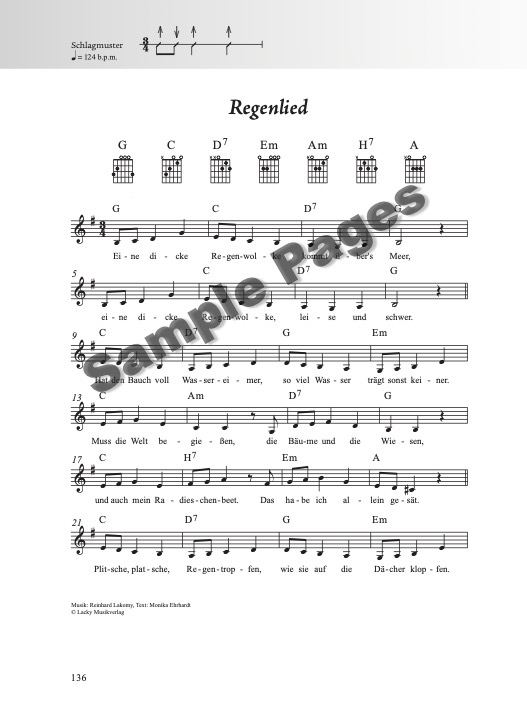
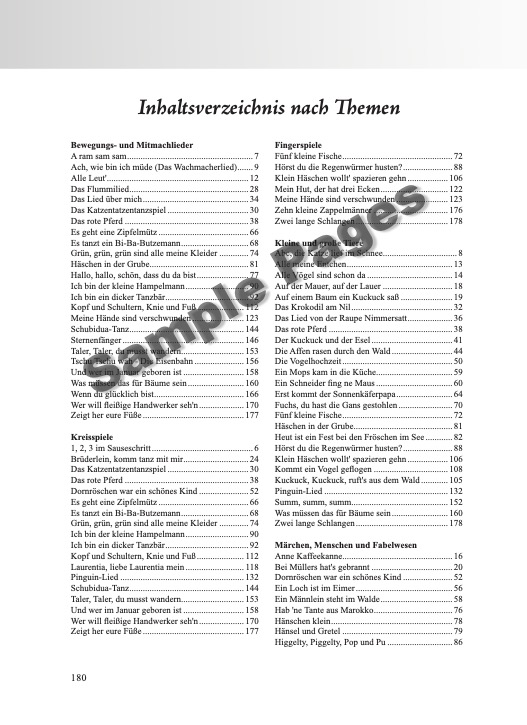

Das Kinderliederbuch
für Alt und Jung
113 alte und neue Kinderlieder für die Kita und zuhause – arrangiert für Gesang und Gitarre, Ukulele oder Klavier. Mit Klassikern, TV-Songs und Liedern von Rolf Zuckowski, Fredrik Vahle und Detlev Jöcker.
für Alt und Jung
113 alte und neue Kinderlieder für die Kita und zuhause – arrangiert für Gesang und Gitarre, Ukulele oder Klavier. Mit Klassikern, TV-Songs und Liedern von Rolf Zuckowski, Fredrik Vahle und Detlev Jöcker.
| Ausgabe | Format | Seiten | Bindung | Preis |
|---|---|---|---|---|
| Gitarre | 18 × 25 cm | 180 | Stay-Open-Bindung | 19,50 € |
| Ukulele | 18 × 25 cm | 180 | Stay-Open-Bindung | 19,50 € |
| XXL (Gitarre + Ukulele) | 23 × 31 cm | 180 | Spiralbindung | 26,50 € |
| Ausgabe | Format | Seiten | Bindung | Preis |
|---|---|---|---|---|
| Klavier / Keyboard | 23 × 31 cm | 184 | Spiralbindung | 26,50 € |
Erhältlich bei Schott Music, Amazon, Stretta Music, Alle Noten, Thomann, Music Store und im gut sortierten Musikfachhandel.
Kinder lieben Musik – sie lassen sich bereits als Babys mit Liedern beruhigen oder ablenken. Wenn sie dann selbst singen, kommen Begeisterung und Lebensfreude dazu. Das Kinderliederbuch liefert dafür ein praktisches Hilfsmittel für Eltern, Großeltern und Erziehende: 113 alte und neue Kinderlieder für die Kita und zuhause.
Neben traditionellen Kinderliedern, die jeder aus seiner Kindheit kennt, enthält die Sammlung viele Lieder aus Film, Funk und TV sowie die beliebtesten Songs von Liedermachern wie Rolf Zuckowski, Fredrik Vahle, Detlev Jöcker, Reinhard Lakomy und Wolfgang Hering. Alle Lieder sind einfach zu begleiten mit Gitarre oder Ukulele und enthalten die benötigten Akkordgriffe und Begleitmuster. Zudem gibt es eine Vielzahl von Illustrationen zum Ausmalen sowie dutzende Anleitungen zum Mitmachen. Ein thematisches Inhaltsverzeichnis mit Kategorien wie Schlaflieder, Geburtstagslieder oder Bewegungslieder erleichtert das Auffinden der richtigen Lieder.
Die XXL-Version mit Spiralbindung steht perfekt auf dem Notenständer. Die Stücke sind immer auf maximal zwei Seiten notiert – beim Spielen muss also nicht umgeblättert werden. Noten und Texte sind groß genug, um sie auch mit bis zu einem Meter Abstand gut lesen zu können. Dank der Zupfmuster wird zudem der Einstieg in die Welt des Folkpickings spielend leicht.
Alle 113 Kinderlieder zum Anhören:
113 Lieder in alphabetischer Reihenfolge:
Einen Eindruck vom Inhalt und der Gestaltung:








